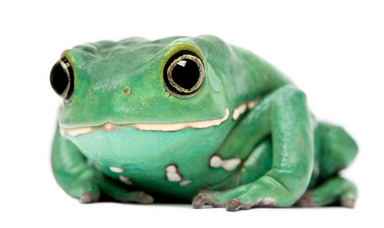

Black Grouper

Black grouper are born female, but some transform into males when they are large enough. These fish can live for more than 30 years, though most are caught before reaching that age.
Atlantic Bottlenose Dolphin

Atlantic bottlenose dolphins are smart, social animals, called "bottlenose" because of their short, stubby rostrums, or snouts. A bottlenose dolphin's back is a nlight to slate gray color, which fades to a pale gray or pink belly. This species' dorsal fin is tall and curves backward. The fluke, or tail fin, is curved with a deep notch in the middle, and their pectoral, or side, fins are pointed.
Atlantic Bay Nettle

The Atlantic bay nettle has two color varieties; in the upper Chesapeake Bay, the white variety is most prevalent, and closer to the Atlantic Ocean, this jelly can have a white, red or brown coloration. Nettles populate the Chesapeake Bay and its tributaries primarily from July through September, though some individuals can be present into November.
Harlequin Tuskfish

The stunning harlequin tuskfish usually has eight pairs of alternating orange, blue, and white bands on its body and prominent sharp, blue teeth. This species inhabits coral reefs and has been found as deep as 105 feet. The harlequin tuskfish is a solitary animal, but it can be aggressive and territorial at times.
Green Sea Turtle

The reticulated whiptail ray has a light brown body with dark brown spots and a solid white underside. Its snout is pointed, and its tail can reach three times the length of its body. The tail usually has one barb on it.
Reticulated Whiptail Ray

The reticulate whipray is also called the leopard ray, honeycomb stingray, and reticulate whiptail ray. It is one of about 20 ray species in which the common name includes whipray. This ray's dorsal side is covered in an intricate pattern of conspicuous dark spots from which it gets the reticulate part of its common name. It inhabits tropical and subtropical waters in sandy areas of coral reefs and in lagoons and estuaries.
Giant Waxy Tree Frog
These frogs inhabit drier parts of treetops, where they prevent themselves from drying out by wiping wax, produced by special skin glands, over their bodies. Because of this, they are sometimes called waxy frogs. Eggs are laid on large leaves overhanging the water. As the eggs hatch, the tadpoles fall into the water to begin development.
Discus

Nicknamed the “pompadour fish” for their distinctive look, discus have a round, flat body similar in shape to a disk. They vary in color, donning hues of green, red, brown and blue and have dark vertical stripes. These stripes serve a dual purpose: to aid in communication within a school of discus and to camouflage the fish from predators.
Barramundi

The barramundi is a large, silver fish that changes sex as it grows. Once the fish reaches about 20 inches in length, it transitions from male to female. Barramundis are born in estuaries. They move temporarily to swamps, then to the mouths and upper regions of rivers until full grown. The fish spend the remainder of their lives in rivers before returning to estuaries to spawn.